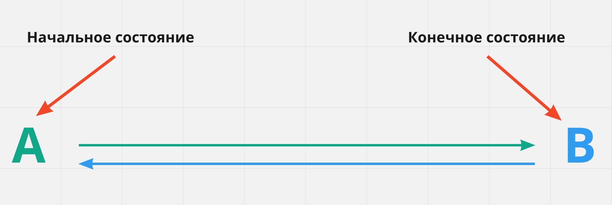
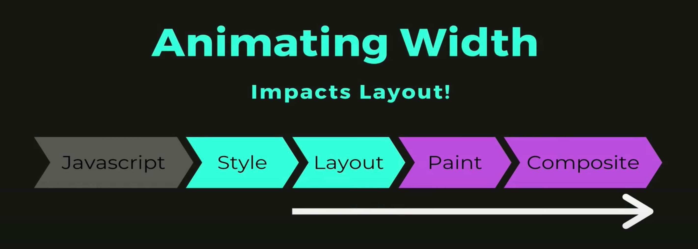
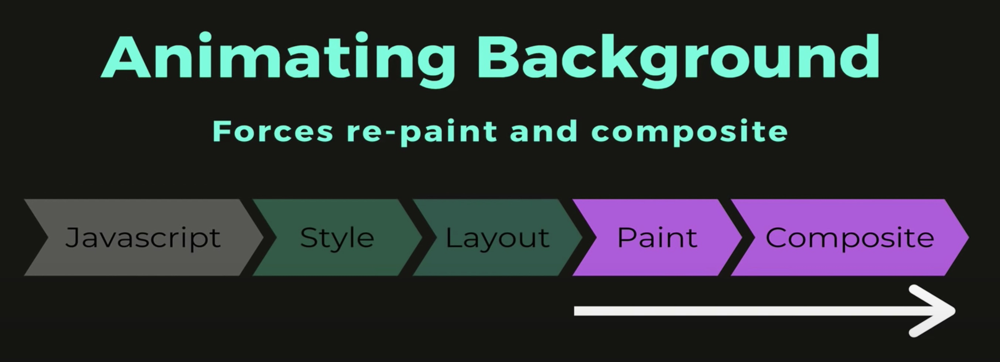
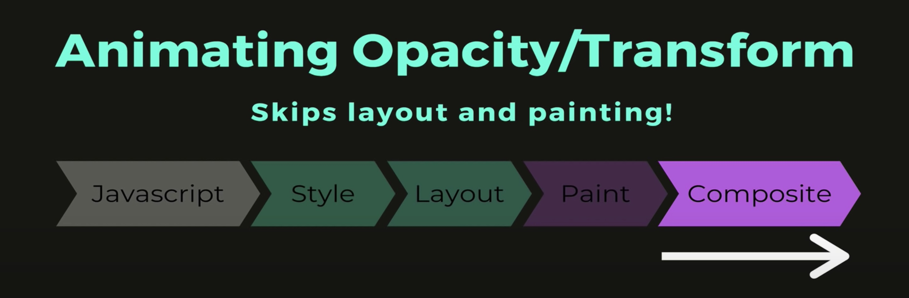
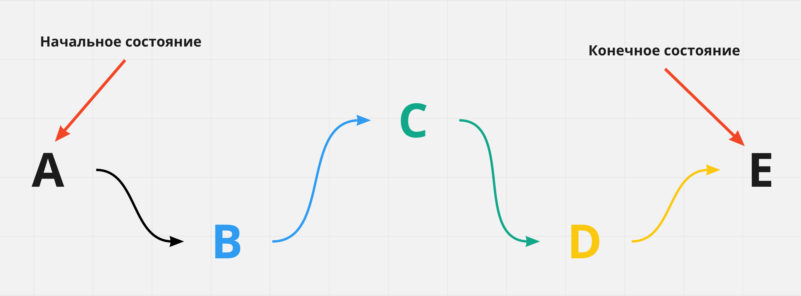

CSS-переходы
CSS-переходы позволяют анимировать изменение значения свойства с течением времени, управляя скоростью этого перехода. Изменение свойств происходит при наступлении определенного события, которое описывается соответствующим псевдоклассом, например :hover.
Переход всегда имеет только два состояния - начальное и конечное значение свойства, и умеет изменять это значение A > B и B > A за указанное время. Для анимаций с большим количеством состояний необходимо использовать CSS-анимацию.
Следующие четыре свойства управляют различными параметрами перехода.
transition-property: <свойство>
transition-duration: <время>
transition-timing-function: <функция распределения времени>
transition-delay: <задержка>
Всё, что необходимо сделать, это указать начальные значения анимируемых свойств и значения свойств перехода, после чего при событии, например :hover, задать новые значения свойств, до которых мы хотим анимировать элемент. Наведите курсор мыши на квадрат для запуска перехода.
При добавлении каких-либо перемещений (переходов и анимаций), они должны быть простыми, не навязчивыми и логичными. Анимация должна передавать смысл, акцентируя внимание, не отвлекая пользователя от взаимодействия с контентом.
Свойство transition-property
Задаёт свойства, к которым будет применён эффект перехода. Значением может быть одно свойство или список свойств через запятую. По умолчанию значение all - анимируются все возможные свойства.
.box {
background-color: teal;
transition-property: background-color;
}
.box:hover {
background-color: orange;
}
Список свойств, которые могут быть анимированы в будущем может измениться. Поэтому обязательно необходимо указывать свойство, которое нужно анимировать, иначе будут анимированы все возможнные свойства элемента, что приведёт к неожиданным результатам.
Свойство transition-duration
Если продолжительность перехода не указана, то изменение значений произойдёт мгновенно, без анимации. Свойство transition-duration задаёт промежуток времени, в течение которого должен осуществиться переход. Указывается в секундах, например 2s или 0.5s, либо в миллисекундах - 2000ms и 500ms соотвественно. Если разные свойства имеют разные значения времени перехода, то они перечисляются через запятую.
.box {
background-color: teal;
transition-property: background-color;
transition-duration: 1000ms;
}
.box:hover {
background-color: orange;
}
Переход срабатывает при наведении курсора на контейнер
Свойство transition-timing-function
Задаёт функцию распределения времени, которая описывает скорость перехода свойства от одного значения к другому за время, указанное в transition-duration, то есть поведение анимации.
.box {
background-color: teal;
transition-property: background-color;
transition-duration: 1000ms;
transition-timing-function: linear;
}
.box:hover {
background-color: orange;
}
В CSS есть несколько ключевых слов для описания базовых функций Безье. По умолчанию используется значение ease - переход начинается медленно, быстро ускоряется, а затем снова замедляется в конце. Остальные ключевые слова: linear, ease-in, ease-out, и ease-in-out.
Наведи на объект
Свойство transition-delay
Задержка, после которой начнётся анимация перехода. Используется для
построения сценариев - последовательности переходов разных элементов.
По умолчанию задано значение 0s.
В примере установлена задержка 500ms. Наведите курсор мыши на квадрат
и переход начнётся только через пол секунды после этого события.
Краткая запись перехода
Все свойства перехода можно объединить в одно составное свойство transition.
transition: [property] [duration] [timing-function] [delay]
Если анимируется несколько свойств, то набор значений для каждого из них разделяется запятой. Необходимо обязательно указать свойство и время перехода, функцию времени и задержку можно не указывать, тогда для них будут использованы значения по умолчанию.
transition: background-color 500ms linear, transform 500ms ease-in-out;
Сценарии с transition-delay
Напишем простой сценарий перехода цвета фона и вращения блока. Сначала блок должен изменить цвет, и только после этого начать вращаться. Всё, что необходимо сделать, это указать переходу вращения подождать столько времени, сколько займёт анимация смены цвета фона.
transition: background-color 500ms linear, transform 500ms ease-in-out 500ms;
Анимируемые свойства
Из всех свойств, которые могут быть анимированы, рекомендуется, по возможности, использовать всего два: opacity (прозрачность) и transform (трансформация). В большинстве случаев анимирование других свойств не значительно повлияет на производительность страницы, но лучше придерживаться этого правила чтобы создавать максимально производительную анимацию. Всё дело в том, как браузер рисует веб-страницу.
- Шаг JavaScript - скрипт или какое-то событие, например ховер или фокус, запускают анимацию стилей элемента.
- Шаг Style - происходит вычисление новых стилей элементов, рассчитывается специфичность, конфликты, каскадирование и тому подобное.
- Шаг Layout - выполняется расчёт геометрии элементов. При анимации свойства, которое влияет на геметрию, например margin, браузеру приходится вычислять новую позицию для целой группы элементов.
- Шаг Painting - происходит прорисовка слоёв, потому что элементы вложены друг в друга или позиционированы, тем самым создавая слоёный пирог.
- Шаг Composite - компоновка всех подготовленных слоёв и отрисовка финальной картинки на экране пользователя.
Например, если анимировать свойство width, браузеру придётся выполнить шаги Layout > Paint > Composite, а это довольно дорогостоящая операция для производительности веб-страницы.
Анимация свойтсва background не влияет на геометрию элементов, поэтому браузеру достаточно выполнить шаги Paint > Composite.
Для анимации свойств opacity и transform браузеру не нужно рассчитывать новую геометрию или перерисовывать слои, достаточно выполнить только шаг Composite.
В примере демонстрируется разница в производительности между анимацией левого отступа и трансформации для перемещения 3000 элементов. При анимации margin, эффект перемещения рваный, скачкообразный, потому что браузеру приходится постоянно рассчитывать геометрию и слои. Если анимируется transform - перемещение плавное, без скачков.
Анимация трёх тысяч элементов это довольно ресурсоёмкая операция и может отображаться по-разному, в зависимости от мощности вашего компьютера.
CSS-анимация
Как и переходы, анимация придаёт веб-страницам динамичность, но в отличие от переходов, анимации не нужен обязательный инициатор (событие), её можно повторить бесконечное количество раз, и между начальным и конечным состояними может быть любое количество промежуточных состояний.
Объявление анимации
Анимация объявляется директивой @keyframes, которая позволяет описать набор кадров (frames, состояний) анимации, которых должно быть как минимум два (начальный и конечный).
/* Имя должно быть описательным, то есть что это за анимация. */
@keyframes имяАнимации {
/* Тут будут описываться кадры */
}
Кадры определяют в какой момент времени изменяются анимируемые свойства и описываются ключевыми словами from (псевдоним 0%) и to (псевдоним 100%) или, чаще всего, в виде процентов в промежутке 0%-100%, так как проценты позволяют указать произвольное значение.
/* Имя должно быть описательным, то есть что это за анимация. */
@keyframes имяАнимации {
0% {
/* Свойства для изменения */bracketSpacing }
/* Произвольное количество промежуточных кадров */
100% {
/* Свойства для изменения */
}
}
В анимации не указывается время или элемент, к которому она будет применяться, это значит, что одну и ту же анимацию можно использовать повторно для разных элементов.
Объявим анимацию для изменения цвета фона элемента в трёх точках: 0%, 50% и 100%.
@keyframes changeBgColor {
0% {
background-color: teal;
}
50% {
background-color: orange;
}
100% {
background-color: deepskyblue;
}
}
Свойства анимации
animation-name
Чтобы использовать уже объявленную анимацию, нужно указать её имя в качестве значения для свойства animation-name.
.box {
animation-name: changeBgColor;
}
Анимацию можно добавить к селектору, тогда она будет применена сразу, при загрузке страницы. Также можно применить анимацию по событию, например ховеру или фокусу, используя соответствующие псевдоклассы.
. box {
/* Базовые стили элемента */
}
/* Добавляем анимацию по ховеру */
.box:hover {
animation-name: changeBgColor;
}
animation-duration
Устанавливает продолжительность анимации - время, за которое будут пройдены все кадры. Задаётся в секундах или миллисекундах. Если не задать длительность, анимация будет мгновенной.
.box {
animation-name: changeBgColor;
animation-duration: 3000ms;
}
По умолчанию анимация происходит один раз, и финальные значения анимируемых свойств не сохраняются, вместо этого элемент возвращается к своему исходному состоянию.
animation-timing-function
Устанавливает функцию распределения времени для анимациии, значения аналогичны transition-timing-function в CSS-переходах.
.box {
animation-name: changeBgColor;
animation-duration: 3000ms;
animation-timing-function: linear;
}
animation-delay
Устанавливает задержку перед началом анимации в секундах или миллисекундах.
.box {
animation-name: changeBgColor;
animation-duration: 3000ms;
animation-timing-function: linear;
animation-delay: 1000ms;
}
animation-iteration-count
Устанавливает количество полных повторений анимации.
.box {
animation-name: changeBgColor;
animation-duration: 3000ms;
animation-timing-function: linear;
animation-iteration-count: 5;
}
Значение может быть целым положительным числом или ключевым словом infinite - это сделает анимацию бесконечной.
animation-direction
Контролирует направление воспроизведения анимации - от начального до конечного кадра, наоборот от конечного кадра до начального, или может быть необходимо чтобы порядок чередовался на каждом повторении.
.box {
animation-name: changeBgColor;
animation-duration: 3000ms;
animation-timing-function: linear;
animation-iteration-count: infinite;
animation-direction: alternate;
}
- normal - анимация воспроизводится от начального до конечного кадра, после чего сразу возвращается в начальный кадр для следующего повторения (сбрасывается в начальное состояние). Это значение по умолчанию.
- reverse - анимация воспроизводится в обратном направлении, начиная от конечного кадра и до начального, после чего сразу возвращается в конечный кадр для следующего повторения.
- alternate - первый раз воспроизведение начинается от начального и до конечного кадра, после чего происходит изменение направления на каждом последующем повторении.
- alternate-reverse - первый раз воспроизведение начинается от конечного и до начального кадра, после чего происходит изменение направления на каждом последующем повторении.
animation-fill-mode
Определяет, что происходит со стилями элемента до начала анимации и после её окончания. То есть позволяет указать, должны ли стили анимации применяться к элементу вне анимации.
animation-fill-mode: none | forwards | backwards | both
- none - стили анимации влияют на элемент только во время анимации. До и после анимации элемент находится в своём исходном состоянии. Значение по умолчанию.
- forwards - стили, применённые в конце анимации, остаются на элементе после её окончания.
- backwards - стартовые стили анимации будут применены к элементу ещё до старта анимации.
- both - совмещает forwards и backwards, стили применяются до и после анимации.
animation-play-state
Позволяет приостановить воспроизведение анимации. По умолчанию задано значение running. Если установить значение paused, например при :hover, анимация будет приостановлена пока курсор мыши находится над элементом.
Свойство animation
Составное свойство позволяет более кратко записать свойства анимации.
animation: [name] [duration] [timing-function] [delay] [iteration-count] [direction] [fill-mode] [play-state]
Значения необязательных свойств можно пропустить или поменять местами. Исключение составляют свойства duration и delay - значение длительности анимации всегда должно указываться до задержки.
.box {
animation: magic 2s infinite;
}
.box {
animation: magic 2s 0.5s ease-in-out;
}
.box {
animation: magic 2s ease-in-out 0.5s forwards;
}
.box {
animation: magic 2s forwards infinite ease-out 0.5s;
}
@keyframes magic {
/* ... */
}
Перспектива
По умолчанию элемент рендерится в 2D-пространстве и при трансформациях по осям X и Y, например rotate, искажается и выглядит неестественно.
TBC